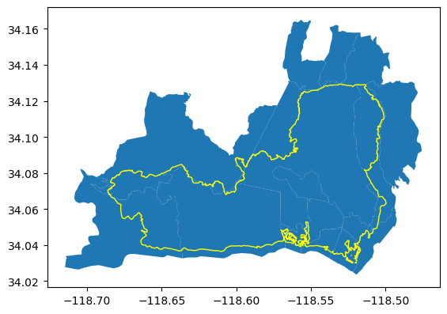
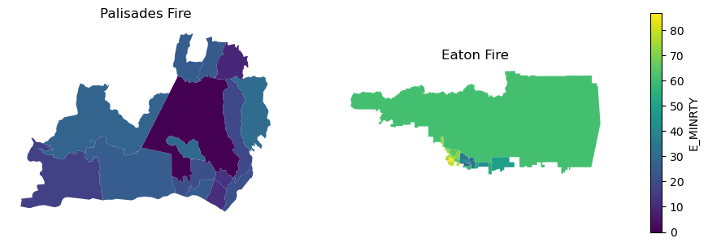
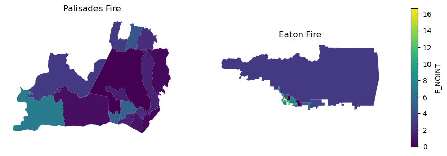

import pandas as pd
import geopandas as gpd
import matplotlib.pyplot as plt
import matplotlib as mpleji = pd.read_csv('data/EJI_2024_California_CSV/EJI_2024_California.csv')
eaton = gpd.read_file('data/Eaton_Perimeter_20250121/Eaton_Perimeter_20250121.shp')
palisades = gpd.read_file('data/Palisades_Perimeter_20250121/Palisades_Perimeter_20250121.shp')
census_tracts = gpd.read_file('data/tl_2021_06_tract/tl_2021_06_tract.shp')eaton_tracts = census_tracts[census_tracts.intersects(eaton.to_crs(census_tracts.crs).unary_union)].copy()fig, ax = plt.subplots()
eaton_tracts.plot(ax=ax)
eaton.to_crs(census_tracts.crs).plot(ax=ax, color='none', edgecolor='yellow')
plt.show()
palisades_tracts = census_tracts[census_tracts.intersects(palisades.to_crs(census_tracts.crs).unary_union)].copy()fig, ax = plt.subplots()
palisades_tracts.plot(ax=ax)
palisades.to_crs(census_tracts.crs).plot(ax=ax, color='none', edgecolor='yellow')
plt.show()
palisades_tracts['TRACTCE'] = palisades_tracts['TRACTCE'].astype('int64')
palisades_tracts = pd.merge(palisades_tracts,
eji,
how='left',
on='TRACTCE')
eaton_tracts['TRACTCE'] = eaton_tracts['TRACTCE'].astype('int64')
eaton_tracts = pd.merge(eaton_tracts,
eji,
how='left',
on='TRACTCE')variable = 'E_MINRTY'
# 1. Compute shared min/max across both datasets
vmin = min(palisades_tracts[variable].min(),
eaton_tracts[variable].min())
vmax = max(palisades_tracts[variable].max(),
eaton_tracts[variable].max())
# 2. Create a shared norm + colormap
cmap = "viridis"
norm = mpl.colors.Normalize(vmin=vmin, vmax=vmax)
# 3. Plot
fig, (ax1, ax2) = plt.subplots(1, 2, figsize=(12, 5))
palisades_tracts.plot(ax=ax1, column=variable, cmap=cmap, norm=norm)
ax1.set_title("Palisades Fire")
ax1.axis("off")
eaton_tracts.plot(ax=ax2, column=variable, cmap=cmap, norm=norm)
ax2.set_title("Eaton Fire")
ax2.axis("off")
# 4. Add a single shared colorbar
sm = mpl.cm.ScalarMappable(norm=norm, cmap=cmap)
sm.set_array([]) # required for matplotlib < 3.6
cbar = fig.colorbar(sm, ax=[ax1, ax2], shrink=0.7)
cbar.set_label(variable)
plt.show()
# 1. Compute shared min/max across both datasets
vmin = min(palisades_tracts["E_NOINT"].min(),
eaton_tracts["E_NOINT"].min())
vmax = max(palisades_tracts["E_NOINT"].max(),
eaton_tracts["E_NOINT"].max())
# 2. Create a shared norm + colormap
cmap = "viridis"
norm = mpl.colors.Normalize(vmin=vmin, vmax=vmax)
# 3. Plot
fig, (ax1, ax2) = plt.subplots(1, 2, figsize=(12, 5))
palisades_tracts.plot(ax=ax1, column='E_NOINT', cmap=cmap, norm=norm)
ax1.set_title("Palisades Fire")
ax1.axis("off")
eaton_tracts.plot(ax=ax2, column='E_NOINT', cmap=cmap, norm=norm)
ax2.set_title("Eaton Fire")
ax2.axis("off")
# 4. Add a single shared colorbar
sm = mpl.cm.ScalarMappable(norm=norm, cmap=cmap)
sm.set_array([]) # required for matplotlib < 3.6
cbar = fig.colorbar(sm, ax=[ax1, ax2], shrink=0.7)
cbar.set_label("E_NOINT")
plt.show()
Ideas:
- Students select one variable that can affect the environmental impact across the different census tracts.
- For that same variable, they compute the percentage of the total population in the affected census tracts that satisfy that variable and create a plot.
palisades_tracts[['E_NOINT', 'E_TOTPOP']]| E_NOINT | E_TOTPOP | |
|---|---|---|
| 0 | 4.5 | 2438 |
| 1 | 1.6 | 3590 |
| 2 | 6.9 | 1890 |
| 3 | 0.6 | 3393 |
| 4 | 0.9 | 3492 |
| 5 | 5.1 | 5763 |
| 6 | 0.3 | 3512 |
| 7 | 0.0 | 79 |
| 8 | 2.8 | 3665 |
| 9 | 2.1 | 2597 |
| 10 | 2.2 | 3709 |
| 11 | 1.6 | 2900 |
| 12 | 2.9 | 3887 |
| 13 | 0.4 | 2806 |
| 14 | 1.5 | 3330 |
total_pop_palisades = palisades_tracts['E_TOTPOP'].sum()
total_pop_palisades47051# Percentage of the population in the census tracts that intersect the fire perimenter without internet access
(palisades_tracts['E_NOINT']*palisades_tracts['E_TOTPOP']/100).sum() / total_pop_palisades * 1002.3651930883509387total_pop_eaton = eaton_tracts['E_TOTPOP'].sum()
total_pop_eaton81681# Percentage of the population in the census tracts that intersect the fire perimenter without internet access
(eaton_tracts['E_NOINT']*eaton_tracts['E_TOTPOP']/100).sum() / total_pop_eaton * 1007.016213072807628A follow up could be to create a function that calculates these percentages for a list of variables and then creating a graphs comparing them.